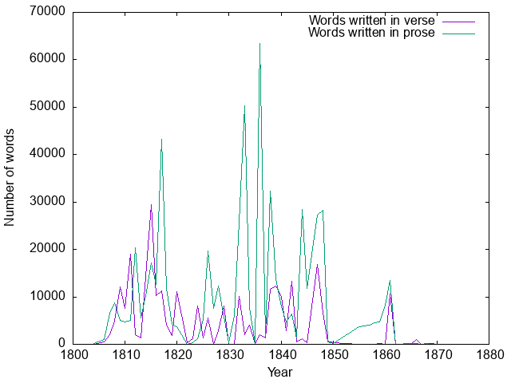
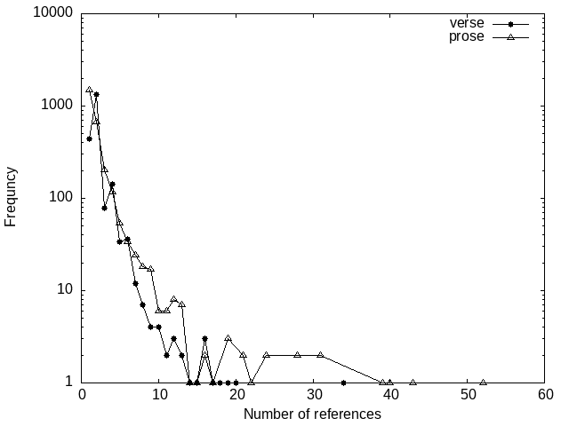
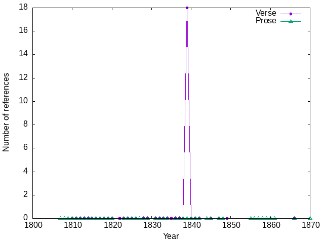
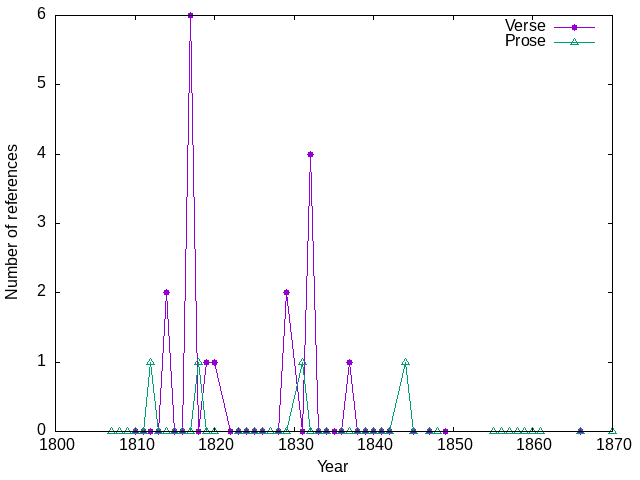

Where the idea came from
- Searching for bible references using text service's facets
an ambiguity
- A bible reference is a string such as 1 Corinthians 13:13 which is intertextual in its nature.
-
However, It is also a text in the scripture
“And now these three remain: faith, hope and love. But the greatest of these is love.”
I will try to use bible reference when discussing the source and use bible location when referring to the target; i.e., the scripture.
a bias
 The number of words written per year, for verse (purple curve) and in prose (green curve). The version of GV used in this analysis contains only 47% of his printed oeuvre, with a bias towards earlier part of Grundtvig’s career. This is the major reason for his seemingly lower text production between 1850 – 1872.
Systematic errors
The number of times a given bible location is referred to as presented in this paper depends on two factors:
- the number of times Grundtvig actually used the location
- the philologists effort to identify the references, and their ability to do so in a text where the references are just vague hints of a location.
Hence there are some possible systematic errors hidden here.
11499 bible references
- The philologists at the Grundtvig centre has identified 11499 bible references in the GV.
- They refer to 4637 locations, i.e., Grundtvig referred to each location 2.5 times on the average.
- In reality there are large numbers of bible locations that just appear once in a reference
- whereas he had a number of favourites which is cited 60 to 70 times in the corpus.
- The favourites differ between verse and prose.
distributions
Genesis 1:27 vs 2:7
Proverbs 4:23 vs Psalm 23:4
 Corinthians 13:12 vs 13:13

What about the 4600 bible locations?
Can we say anything more general?
Cartesian coordinate system
Are all those years alike?
Cladograms for verse (left) and prose (right)
{kind=link}
{kind=link}